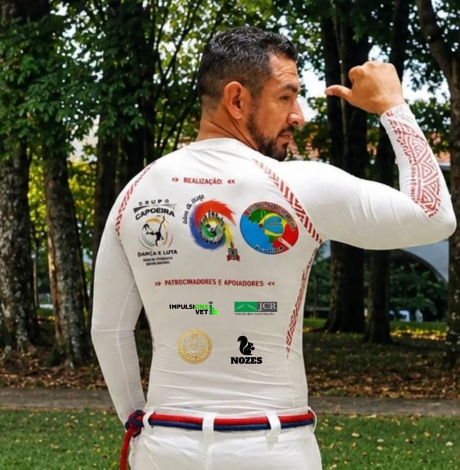
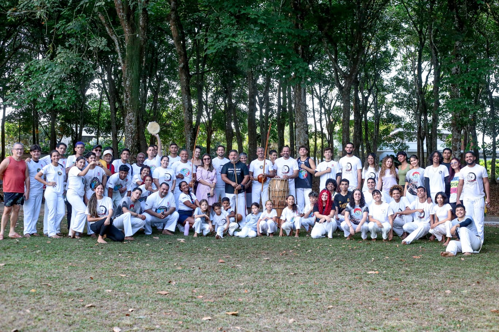
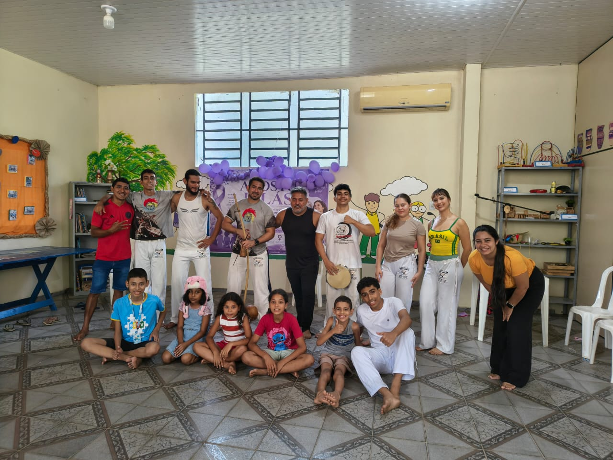
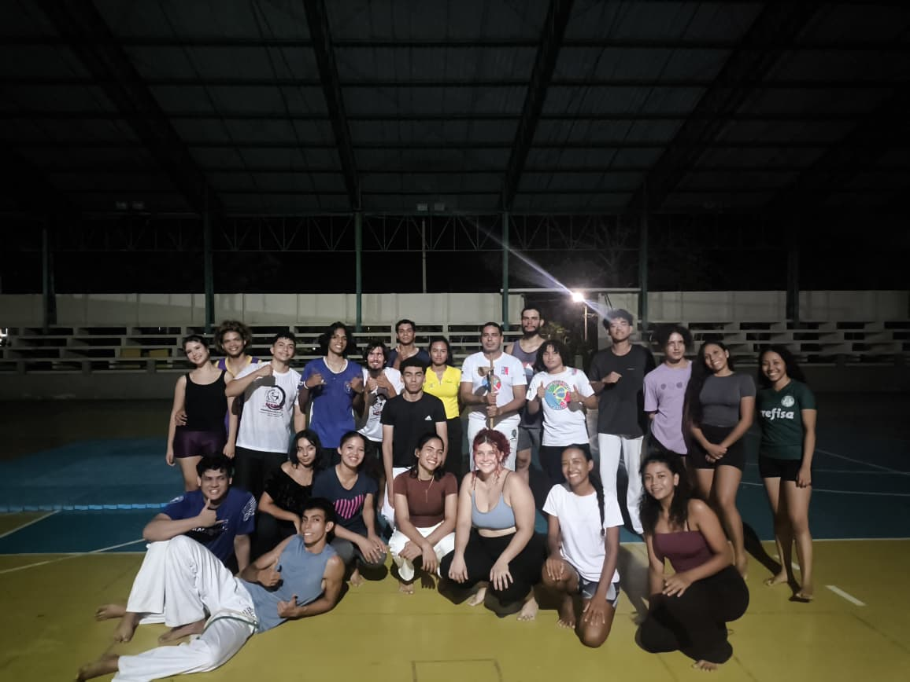

Projeto Além da Ginga
Criado em 2016, o Projeto Além da Ginga é uma iniciativa cultural comunitária que atua em Castanhal e região, promovendo a capoeira como patrimônio histórico, cultural e imaterial brasileiro.
Por meio de aulas, oficinas, rodas, eventos, palestras e ações em comunidades tradicionais, o projeto atende crianças, adolescentes, jovens e adultos, especialmente pessoas em situação de vulnerabilidade social.
Ao longo de quase uma década, consolidou-se como espaço de:
- Formação cultural e cidadã;
- Valorização da identidade afro-brasileira;
- Preservação e difusão da capoeira;
- Fortalecimento dos vínculos comunitários;
- Integração entre universidade, escola e comunidade.




Histórico e origem
O Projeto Além da Ginga nasceu da trajetória de Paulo Maia Teixeira Mestre Presunto que atua há cerca de 30 anos na capoeira sendo mais de 25 dedicados ao ensino à formação de praticantes e à participação em projetos sociais e culturais após retornar ao Pará em 2015 estruturou uma iniciativa permanente voltada à capoeira como manifestação cultural educativa e social em 2016 o projeto foi oficialmente iniciado em Castanhal desenvolvendo ações contínuas junto a comunidades urbanas periféricas e tradicionais desde então mantém atuação regular e ininterrupta tornando-se referência local na difusão da capoeira como cultura tradicional e popular.
As imagens retratam essa evolução histórica pedagógica e institucional da capoeira vinculada ao Mestre Presunto e ao projeto na imagem superior esquerda roda de capoeira em 1996 na Escola Pequeno Príncipe início da trajetória na superior direita formação como graduado já atuando como monitor na inferior esquerda aulas regulares no Instituto Federal do Pará consolidando o projeto em espaços educacionais e na inferior direita jogo no III Batizado de Capoeira na UFPA em parceria com o Grupo Dança e Luta com participação do Mestre Geleia referência da capoeira no Pará.
Eventos, batizados e marcos culturais
o Projeto Além da Ginga consolidou sua trajetória por meio de batizados, oficinas, cursos e eventos culturais que marcaram a vida dos participantes e fortaleceram a cena local. O primeiro batizado em Castanhal, realizado em 2022 após a pandemia, simbolizou a retomada das atividades presenciais e a formação das crianças.
Em seguida, o projeto participou de oficinas e cursos em academias e universidades, evidenciando a capoeira como prática esportiva, cultural e pedagógica
O segundo batizado ampliou o número de crianças e mestres convidados, reforçando a integração comunitária.
Já o evento na Universidade Federal do Pará destacou a expansão institucional, com mesa-redonda, homenagens a mestres e o terceiro batizado, reafirmando a capoeira como espaço de cultura, educação e convivência.


EQUIPE E COLABORADORES
Pedro Paulo Maia Teixeira (Mestre Presunto) – Coordenação geral, educador e agente cultural.Instagram
Michel Santos e Cunha (Mestre Michel) – Colaborador histórico e parceiro e Mestre do Grupo Dança e Luta. Instagram
Raylton Maicon Oliveira Venâncio (Graduado Meia-noite) – Monitor cultural; iniciou no projeto como aluno e, com apoio da capoeira, formou-se em Educação Física, atuando como multiplicador cultural. Instagram
O projeto conta ainda com a participação de diversos colaboradores, alunos e apoiadores ao longo de sua trajetória.
IMPACTO SOCIAL E CULTURAL
O Projeto Além da Ginga contribui para:
- Democratização do acesso à cultura
- Valorização da cultura afro-brasileira
- Formação cidadã de crianças e jovens
- Fortalecimento dos vínculos comunitários
- Continuidade dos saberes tradicionais da capoeira
A capoeira é utilizada como ferramenta de transformação social, educação e identidade cultural.
REGISTROS E MEMÓRIAS
O projeto mantém registros contínuos de suas ações por meio de fotografias, vídeos e publicações em redes sociais, documentando oficinas, aulas, eventos, rodas e ações comunitárias ao longo dos anos.
Esses registros comprovam a atuação contínua, a diversidade de ações e o alcance comunitário do Projeto Além da Ginga.
CONSIDERAÇÕES FINAIS
Ao completar quase uma década de atuação contínua, o Projeto Além da Ginga reafirma seu compromisso com a Cultura Viva, a valorização da capoeira como patrimônio imaterial brasileiro e a promoção da cultura afro-brasileira como instrumento de educação, identidade e transformação social.
O projeto segue ativo, enraizado no território e comprometido com a continuidade de suas ações culturais junto às comunidades.